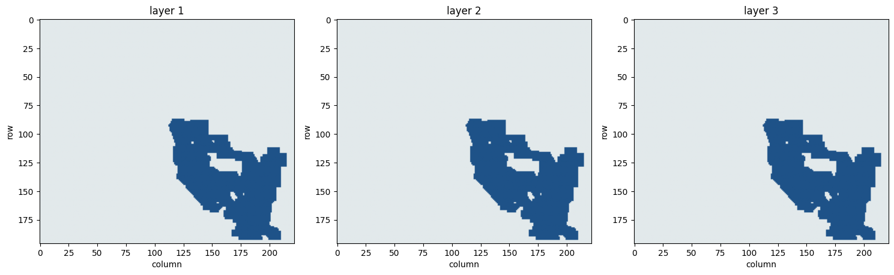
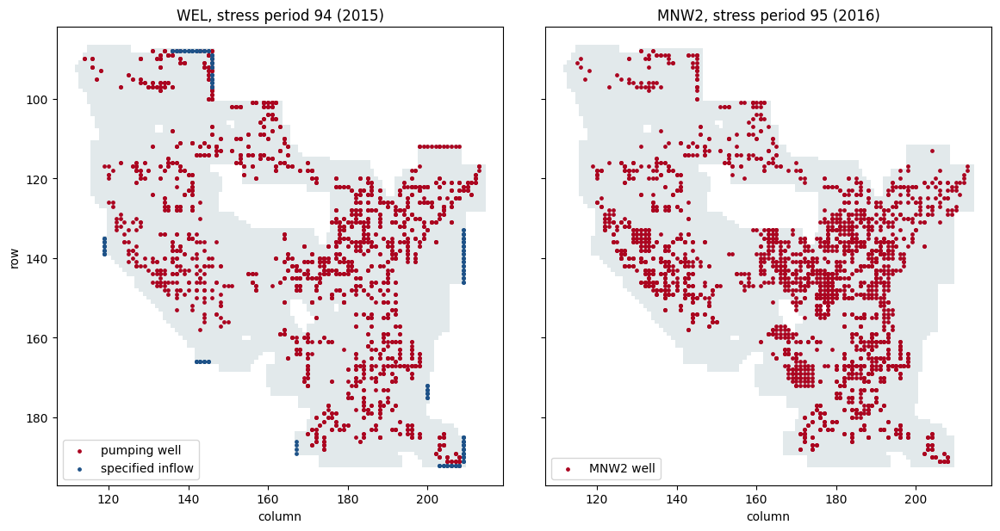
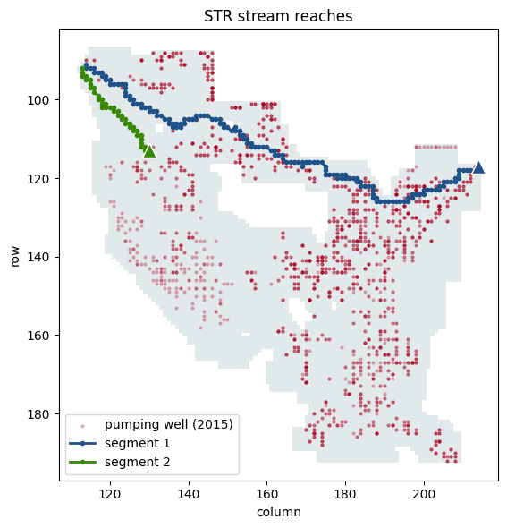
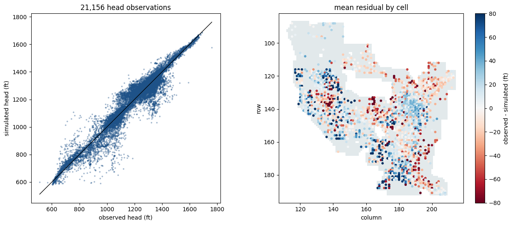
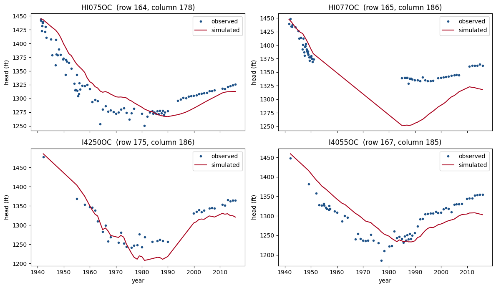

! unzip ../../pinal_county_model.zipWeek 9, notebook 2: Starting up the Pinal County model
HWRS 564a · Fall 2026
Project 3 uses a MODFLOW model of the Pinal Active Management Area, built by the Arizona Department of Water Resources. This notebook gets the model files onto your machine and loads them with FloPy. You will not run the model yet, but we will look at it’s structure.
The goal is to look at a real model through the things you have learned, such as its grid, its ibound, its layer types, and its solver.
There are no # CHECK cells here. Write your answers to the questions in the markdown cells provided.
Part 1: Get the files
- Download the model from the D2L announcement.
- Drag and drop it into the base level of your codespace (
hwrs564a_course_materialsfolder). - Unzip the model by running the next cell.
The folder is listed in .gitignore, so git will not try to commit it.
Then run the next cell. It looks for the model’s name file, which ends in .nam.
from pathlib import Path
import flopy
import matplotlib.pyplot as plt
import numpy as np
import pandas as pd
ROOT = Path(".") # unzips into this folder
PINAL_DIR = ROOT / "pinal_county_model"
MF_EXE = ROOT / "modflow" / "mf2005" # not used to run anything in this notebook
assert PINAL_DIR.exists(), (
f"No folder at {PINAL_DIR.resolve()}. Check where you unzipped the model."
)
name_files = sorted(PINAL_DIR.rglob("*.nam"))
assert name_files, f"No .nam file found under {PINAL_DIR.resolve()}."
for f in name_files:
print(f.relative_to(PINAL_DIR))PM_AWS2019_SS25115.nam
PM_AWS2019_SS25115_ORIGINAL.namIf more than one name file is listed, set NAM below to the one named in the Project 3 instructions. Otherwise leave it as it is.
NAM = name_files[0]
MODEL_WS = NAM.parent
print(f"name file: {NAM.name}")
print(f"model folder: {MODEL_WS}")name file: PM_AWS2019_SS25115.nam
model folder: pinal_county_modelPart 2: What packages does it use?
The name file is plain text. Each line gives a package, a unit number, and a file name. This is the same kind of file FloPy wrote for your previous models.
for line in NAM.read_text(errors="replace").splitlines():
if line.strip() and not line.lstrip().startswith("#"):
print(line)LIST 7 ./PM_AWS2019_SS_2115.lst
BAS6 1 PM_AWS_SS_2115.bas
DIS 29 PM_AWS_SS_2115_RevElevs_External.dis #194 Years
LPF 11 PM_AWS_SS_2115_RevKx.lpf
WEL 12 PM_PUMP_SS_2015_SPFLUX_SS_2115.wel #Historic Pumping SS - 2015, Specified Flux 194 Years BC Zones 12 through 19
MNW2 19 MNW_AWS2019_2016_2115.mnw #100-Year Projected Pumping Only
MNWI 80 PM_AWS_SS_2115.mnwi # Includes flag to generate QSUM.
EVT 20 PM_AWS_SS_2115.evt
RCH 18 PM_AWS_SS_2115.rch #194 Years
CHD 40 PM_AWS_SS_2115.chd #Zone 11 Sierra Estrella Outflow Only
SWT 24 PM_AWS_SS_2115.swt #Sends Subsidence Arrays to LIST file at select years
STR 27 PM_AWS_SS_2115.str
HOB 25 PM_AWS_SS_2015.HOB #Head Targets for Historic Time Only SS - 2015
OC 22 PM_AWS_SS_2115.oc
GMG 14 PM_AWS_SS_2115.gmg #Updated GMG, adjusted for model convergence for all 194 Years
DATA 35 ./Solver.csv
DATA 32 ./HeadObservations.txt
DATA(BINARY) 50 ./Pinal.cbb
DATA(BINARY) 51 ./Pinal.crc
DATA(BINARY) 54 ./Pinal.cbw
DATA(BINARY) 30 ./Pinal.hds
DATA(BINARY) 31 ./Pinal.ddn
DATA 86 ./mnw_qsum.datQuestion 1. Which of these packages have you used already (DIS, BAS6, LPF, WEL, RCH, PCG, OC)? Which are new to you? List the new ones here and look up what each one does in the MODFLOW-2005 online guide.
Your answer:
Part 3: Load the grid
Modflow.load reads every package by default. For a large model that takes a while, so we ask for only the two packages that describe the grid: DIS and BAS6. load_only takes a list of package names.
m = flopy.modflow.Modflow.load(
NAM.name,
model_ws=str(MODEL_WS),
load_only=["dis", "bas6"],
exe_name=str(MF_EXE),
check=False,
forgive=True,
)
print(m.get_package_list())['DIS', 'BAS6']/Users/bzq/Documents/teaching/hwrs564a/f2026_planning/old_homework_drafts/.venv/lib/python3.13/site-packages/flopy/mbase.py:105: UserWarning: The program modflow/mf2005 does not exist or is not executable.
warn(dis = m.dis
print(f"layers: {dis.nlay}")
print(f"rows: {dis.nrow}")
print(f"columns: {dis.ncol}")
print(f"cells: {dis.nlay * dis.nrow * dis.ncol:,}")
print()
print(f"column widths (delr): {dis.delr.array.min():g} to {dis.delr.array.max():g}")
print(f"row widths (delc): {dis.delc.array.min():g} to {dis.delc.array.max():g}")
print(f"length unit code (lenuni): {dis.lenuni} (1 = feet, 2 = metres)")
print(f"time unit code (itmuni): {dis.itmuni} (1 = seconds, 4 = days, 5 = years)")
print()
print(f"stress periods: {dis.nper}")
print(f"steady-state periods: {int(np.sum(dis.steady.array))}")layers: 3
rows: 196
columns: 222
cells: 130,536
column widths (delr): 2640 to 2640
row widths (delc): 2640 to 2640
length unit code (lenuni): 1 (1 = feet, 2 = metres)
time unit code (itmuni): 4 (1 = seconds, 4 = days, 5 = years)
stress periods: 194
steady-state periods: 1Question 2. How big is a cell, and in what units? How does that compare with the 250 m cells you used this week? Based on Tuesday’s notebook, what does that cell size mean for the head the model reports in a cell with a pumping well?
Your answer:
Question 3. How many stress periods are there, and how many are steady state? We cover stress periods next week, so for now just record the numbers.
Your answer:
Part 4: ibound
Plot ibound for each layer, using the same three colors as Tuesday’s notebook.
ibound = m.bas6.ibound.array
print(f"ibound shape: {ibound.shape}")
cmap = plt.matplotlib.colors.ListedColormap(["#AB0520", "#E2E9EB", "#1E5288"])
fig, axes = plt.subplots(1, dis.nlay, figsize=(5 * dis.nlay, 5), squeeze=False)
for k, ax in enumerate(axes[0]):
ax.imshow(np.sign(ibound[k]), cmap=cmap, vmin=-1.5, vmax=1.5)
ax.set_title(f"layer {k + 1}")
ax.set_xlabel("column")
ax.set_ylabel("row")
plt.tight_layout()
plt.show()
for k in range(dis.nlay):
print(f"layer {k + 1}: {int((ibound[k] > 0).sum()):7,d} active "
f"{int((ibound[k] == 0).sum()):7,d} inactive "
f"{int((ibound[k] < 0).sum()):7,d} constant head")ibound shape: (3, 196, 222)
layer 1: 6,052 active 37,460 inactive 0 constant head
layer 2: 6,052 active 37,460 inactive 0 constant head
layer 3: 6,052 active 37,460 inactive 0 constant headBlue is active, grey is inactive, and red is constant head. The plot uses np.sign(ibound) because MODFLOW treats any positive value as active and any negative value as constant head.
Question 4. What fraction of the grid is active in each layer? Where are the constant-head cells, if there are any? What do you think the inactive areas are?
Your answer:
Part 5: Layer types and solver
Layer types are in the LPF package, or in the UPW package if the model uses MODFLOW-NWT. The cell below checks the name file for either one and loads it. This reads the conductivity arrays, so it can take a minute.
packages_in_nam = [
line.split()[0].upper()
for line in NAM.read_text(errors="replace").splitlines()
if line.strip() and not line.lstrip().startswith("#")
]
flow_package = next((p for p in ("LPF", "UPW", "BCF6") if p in packages_in_nam), None)
solver_package = next((p for p in ("PCG", "NWT", "GMG", "SIP", "DE4") if p in packages_in_nam), None)
print(f"flow package: {flow_package}")
print(f"solver package: {solver_package}")
if flow_package in ("LPF", "UPW"):
m_flow = flopy.modflow.Modflow.load(
NAM.name,
model_ws=str(MODEL_WS),
load_only=["dis", flow_package.lower()],
exe_name=str(MF_EXE),
check=False,
forgive=True,
)
flow = m_flow.get_package(flow_package)
print(f"laytyp for each layer: {flow.laytyp.array.tolist()}")
for k in range(dis.nlay):
hk = flow.hk.array[k][ibound[k] != 0]
if hk.size:
print(f"layer {k + 1} hk in active cells: {hk.min():g} to {hk.max():g}")
else:
print(f"This model uses a flow package, {flow_package}, we have not covered. Ask in class.")flow package: LPF
solver package: GMG
laytyp for each layer: [1, 3, 3]
layer 1 hk in active cells: 15 to 132.97
layer 2 hk in active cells: 0.5 to 50
layer 3 hk in active cells: 0.37 to 88.31Part 6: Where are the wells?
This model puts wells in two packages:
- WEL holds historic pumping, from the start of the model through 2015. It also holds specified-flux cells at the model edge, where groundwater flows in from neighboring basins. Those have positive rates. Pumping is negative.
- MNW2 (Multi-Node Well) holds the projected pumping for 2016 to 2115. One MNW2 well can be screened across more than one layer.
The cell below loads both packages. The WEL file is long (a list of wells for every stress period), so this can take about 15 seconds.
well_packages = [p for p in ("WEL", "MNW2") if p in packages_in_nam]
print(f"well packages: {well_packages}")
m_wells = flopy.modflow.Modflow.load(
NAM.name,
model_ws=str(MODEL_WS),
load_only=["dis"] + [p.lower() for p in well_packages],
exe_name=str(MF_EXE),
check=False,
forgive=True,
)
print(m_wells.get_package_list())well packages: ['WEL', 'MNW2']
['DIS', 'WEL', 'MNW2']The map below shows one stress period from each package: the last historic year (2015) for WEL, and the first projected year (2016) for MNW2. Stress period numbers in FloPy start at 0, so stress period 94 in the model is kper = 93. A well screened in several layers shows up as one dot, because the map is in plan view.
The grey area is every cell that is active in at least one layer. The map is zoomed to that area.
HIST_KPER = 93 # stress period 94: 2015, the last year of historic pumping
PROJ_KPER = 94 # stress period 95: 2016, the first year of projected pumping
footprint = (ibound > 0).any(axis=0)
footprint_cmap = plt.matplotlib.colors.ListedColormap(["white", "#E2E9EB"])
# zoom to the active area, which fills only part of the grid
rows, cols = np.nonzero(footprint)
fig, axes = plt.subplots(1, 2, figsize=(12, 6), sharex=True, sharey=True)
for ax in axes:
ax.imshow(footprint, cmap=footprint_cmap, vmin=0, vmax=1)
ax.set_xlim(cols.min() - 5, cols.max() + 5)
ax.set_ylim(rows.max() + 5, rows.min() - 5)
ax.set_xlabel("column")
axes[0].set_ylabel("row")
if "WEL" in well_packages:
wel = m_wells.wel.stress_period_data[HIST_KPER]
pumping = wel[wel["flux"] < 0]
inflow = wel[wel["flux"] > 0]
axes[0].scatter(pumping["j"], pumping["i"], s=6, color="#AB0520", label="pumping well")
axes[0].scatter(inflow["j"], inflow["i"], s=6, color="#1E5288", label="specified inflow")
axes[0].legend(loc="lower left")
axes[0].set_title(f"WEL, stress period {HIST_KPER + 1} (2015)")
n_pump_cells = len({(i, j) for i, j in zip(pumping["i"], pumping["j"])})
print(f"WEL, stress period {HIST_KPER + 1}:")
print(f" {len(pumping):,d} pumping entries in {n_pump_cells:,d} map cells, "
f"total {-pumping['flux'].sum():,.0f} ft^3/day")
print(f" {len(inflow):,d} specified-inflow entries, total {inflow['flux'].sum():,.0f} ft^3/day")
if "MNW2" in well_packages:
mnw = m_wells.mnw2.stress_period_data[PROJ_KPER]
axes[1].scatter(mnw["j"], mnw["i"], s=6, color="#AB0520", label="MNW2 well")
axes[1].legend(loc="lower left")
axes[1].set_title(f"MNW2, stress period {PROJ_KPER + 1} (2016)")
print(f"MNW2, stress period {PROJ_KPER + 1}:")
print(f" {len(mnw):,d} wells, total {-mnw['qdes'].sum():,.0f} ft^3/day")
plt.tight_layout()
plt.show()WEL, stress period 94:
2,333 pumping entries in 876 map cells, total 65,632,916 ft^3/day
168 specified-inflow entries, total 5,523,544 ft^3/day
MNW2, stress period 95:
2,547 wells, total 93,645,664 ft^3/day
wells = m_wells.welwells.stress_period_data.get_dataframe()| per | k | i | j | node | flux | |
|---|---|---|---|---|---|---|
| 0 | 0 | 1 | 133 | 209 | 29735 | 4300.000000 |
| 1 | 0 | 2 | 133 | 209 | 29735 | 5000.000000 |
| 2 | 0 | 0 | 134 | 209 | 29957 | 85000.000000 |
| 3 | 0 | 1 | 134 | 209 | 29957 | 4300.000000 |
| 4 | 0 | 2 | 134 | 209 | 29957 | 5000.000000 |
| ... | ... | ... | ... | ... | ... | ... |
| 255488 | 193 | 2 | 192 | 204 | 42828 | 24900.890625 |
| 255489 | 193 | 2 | 192 | 205 | 42829 | 32345.490234 |
| 255490 | 193 | 2 | 192 | 206 | 42830 | 47782.648438 |
| 255491 | 193 | 2 | 192 | 207 | 42831 | 79084.156250 |
| 255492 | 193 | 2 | 192 | 208 | 42832 | 47499.820312 |
255493 rows × 6 columns
Question 8. Where is the pumping concentrated? Compare the two maps: do the projected MNW2 wells sit in the same places as the historic WEL pumping? Where are the specified-inflow cells, and why would the model need them there?
Your answer:
Part 7: Where are the streams?
Streams are in the STR (Stream Routing) package. Each stream is a segment made of reaches, one reach per model cell, numbered from upstream to downstream. MODFLOW routes water down each segment and lets the stream gain water from, or lose water, to the aquifer below it. The first reach of a segment can have a specified inflow: water entering the model from upstream.
The STR file is small, so this load is quick.
m_str = flopy.modflow.Modflow.load(
NAM.name,
model_ws=str(MODEL_WS),
load_only=["dis", "str"],
exe_name=str(MF_EXE),
check=False,
forgive=True,
)
reaches = m_str.str.stress_period_data[0] # the stream cells are the same in every stress period
segments = np.unique(reaches["segment"])
print(f"{len(reaches)} stream reaches in {len(segments)} segments")
FT3_PER_DAY_TO_ACRE_FT_PER_YEAR = 365.25 / 43560
for seg in segments:
r = np.sort(reaches[reaches["segment"] == seg], order="reach")
print(f"segment {seg}: {len(r):3d} reaches, "
f"inflow at first reach {r['flow'][0] * FT3_PER_DAY_TO_ACRE_FT_PER_YEAR:,.0f} acre-ft/yr, "
f"streambed drops from {r['sbot'][0]:,.0f} to {r['sbot'][-1]:,.0f} ft")/Users/bzq/Documents/teaching/hwrs564a/f2026_planning/old_homework_drafts/.venv/lib/python3.13/site-packages/flopy/mbase.py:105: UserWarning: The program modflow/mf2005 does not exist or is not executable.
warn(189 stream reaches in 2 segments
segment 1: 150 reaches, inflow at first reach 500,342 acre-ft/yr, streambed drops from 1,515 to 996 ft
segment 2: 39 reaches, inflow at first reach 0 acre-ft/yr, streambed drops from 1,125 to 1,001 ftThe map shows each segment as a line through its reaches. The triangle marks the first (upstream) reach. The pumping wells from Part 6 are shown faintly for context.
seg_colors = ["#1E5288", "#378805"]
fig, ax = plt.subplots(figsize=(7, 6))
ax.imshow(footprint, cmap=footprint_cmap, vmin=0, vmax=1)
ax.set_xlim(cols.min() - 5, cols.max() + 5)
ax.set_ylim(rows.max() + 5, rows.min() - 5)
if "WEL" in well_packages:
ax.scatter(pumping["j"], pumping["i"], s=4, color="#AB0520", alpha=0.25,
label="pumping well (2015)")
for seg, color in zip(segments, seg_colors):
r = np.sort(reaches[reaches["segment"] == seg], order="reach")
ax.plot(r["j"], r["i"], "-o", ms=3, lw=2, color=color, label=f"segment {seg}")
ax.plot(r["j"][0], r["i"][0], "^", ms=11, color=color, markeredgecolor="white")
ax.set_xlabel("column")
ax.set_ylabel("row")
ax.set_title("STR stream reaches")
ax.legend(loc="lower left")
plt.tight_layout()
plt.show()
Question 9. Find the Pinal Active Management Area on a map of Arizona (Casa Grande, Florence, Eloy, Maricopa). Which rivers are segments 1 and 2? Which way does each one flow? Are the stream cells near the areas of heavy pumping, and what would you expect pumping to do to how much water the streams lose to the aquifer?
Your answer:
Part 8: How well does the model match measured heads?
ADWR calibrated this model against water levels measured in wells. The HOB (head observation) package lists every measurement: where it was taken, when, and the measured head. When MODFLOW runs, it writes the head it simulated at the same place and time to an output file.
The model folder includes the output from a completed run, so we can compare measured and simulated heads without running anything. Two files are involved:
- the
.HOBinput file, which gives each observation’s name, row, column, stress period, and time within that stress period; - the HOB output file, which gives each observation’s name, simulated head, and observed head.
The first line of the HOB file says which unit number the output goes to. The name file tells us which file has that unit number.
# unit number -> file name, from the name file
nam_units = {}
for line in NAM.read_text(errors="replace").splitlines():
words = line.split()
if len(words) >= 3 and not line.lstrip().startswith("#"):
nam_units[int(words[1])] = (words[0].upper(), words[2])
hob_file = next(fname for ftype, fname in nam_units.values() if ftype == "HOB")
hob_lines = [l for l in (MODEL_WS / hob_file).read_text(errors="replace").splitlines()
if l.strip() and not l.lstrip().startswith("#")]
hob_out_unit = int(hob_lines[0].split()[3]) # IUHOBSV
hob_out_file = nam_units[hob_out_unit][1]
print(f"HOB input: {hob_file}")
print(f"HOB output: {hob_out_file} (unit {hob_out_unit})")
# observation records have 9 items and start with a name; the lines in between
# give layer weights for observations that span more than one layer
records = []
for l in hob_lines[2:]:
w = l.split()
if len(w) >= 9 and not w[0][0].isdigit():
records.append({"name": w[0], "row": int(w[2]) - 1, "col": int(w[3]) - 1,
"sp": int(w[4]), "toffset": float(w[5])})
obs = pd.DataFrame(records)
out = pd.read_csv(MODEL_WS / hob_out_file, sep=r"\s+", skiprows=1,
names=["simulated", "observed", "name"])
obs = obs.merge(out, on="name")
obs["residual"] = obs["observed"] - obs["simulated"]
# stress period 1 is the steady-state 1922 period; stress period n >= 2 is year 1921 + n
perlen = dis.perlen.array
obs["year"] = np.where(obs["sp"] == 1, 1922.0,
1921 + obs["sp"] + obs["toffset"] / perlen[obs["sp"] - 1])
# names are a site ID followed by a 5-digit date code
obs["site"] = obs["name"].str[:-5]
print(f"{len(obs):,d} observations at {obs['site'].nunique():,d} sites, "
f"{obs['year'].min():.0f} to {obs['year'].max():.0f}")
print(f"mean residual (observed - simulated): {obs['residual'].mean():6.1f} ft")
print(f"mean absolute residual: {obs['residual'].abs().mean():6.1f} ft")
print(f"root mean square residual: {np.sqrt((obs['residual'] ** 2).mean()):6.1f} ft")HOB input: PM_AWS_SS_2015.HOB
HOB output: ./HeadObservations.txt (unit 32)
21,156 observations at 3,228 sites, 1922 to 2016
mean residual (observed - simulated): -1.0 ft
mean absolute residual: 36.8 ft
root mean square residual: 53.1 ftThe left plot compares every observed head with its simulated value. Points on the black line are matched exactly. The right plot maps the mean residual for each model cell. The residual is observed minus simulated, so blue means the model is too low and red means the model is too high. The color scale stops at +/-80 ft; cells beyond that get the end color.
fig, axes = plt.subplots(1, 2, figsize=(13, 5.5))
ax = axes[0]
ax.scatter(obs["observed"], obs["simulated"], s=3, alpha=0.3, color="#1E5288")
lims = [min(obs["observed"].min(), obs["simulated"].min()),
max(obs["observed"].max(), obs["simulated"].max())]
ax.plot(lims, lims, color="black", lw=1)
ax.set_aspect("equal")
ax.set_xlabel("observed head (ft)")
ax.set_ylabel("simulated head (ft)")
ax.set_title(f"{len(obs):,d} head observations")
ax = axes[1]
by_cell = obs.groupby(["row", "col"])["residual"].mean().reset_index()
ax.imshow(footprint, cmap=footprint_cmap, vmin=0, vmax=1)
sc = ax.scatter(by_cell["col"], by_cell["row"], c=by_cell["residual"],
cmap="RdBu", vmin=-80, vmax=80, s=10)
ax.set_xlim(cols.min() - 5, cols.max() + 5)
ax.set_ylim(rows.max() + 5, rows.min() - 5)
ax.set_xlabel("column")
ax.set_ylabel("row")
ax.set_title("mean residual by cell")
fig.colorbar(sc, ax=ax, label="observed - simulated (ft)")
plt.tight_layout()
plt.show()
A single comparison of all observations hides how the fit changes over time. A hydrograph plots head against time at one site. The cell below lists the sites with the longest records, then plots four of them. To look at other sites, change SITES to any names from the list. Rows and columns are FloPy’s, which start at 0, so they match the maps above.
The model’s simulated heads are only written at observation times. Where there is a long gap between measurements, the red line is a straight line across the gap, not model output.
# Group observations so each site gets one row in the summary table.
by_site = obs.groupby("site")
records_by_site = pd.DataFrame()
records_by_site["n_obs"] = by_site.size()
records_by_site["first"] = by_site["year"].min()
records_by_site["last"] = by_site["year"].max()
records_by_site["row"] = by_site["row"].first()
records_by_site["col"] = by_site["col"].first()
records_by_site["span"] = records_by_site["last"] - records_by_site["first"]
# Keep sites with at least 15 observations, then sort by record length.
long_records = records_by_site[records_by_site["n_obs"] >= 15]
long_records = long_records.sort_values("span", ascending=False)
print(long_records.head(10).round(1))
SITES = list(long_records.index[:4])
fig, axes = plt.subplots(2, 2, figsize=(12, 7), sharex=True)
for ax, site in zip(axes.flat, SITES):
d = obs[obs["site"] == site].sort_values("year")
ax.plot(d["year"], d["observed"], "o", ms=3, color="#1E5288", label="observed")
ax.plot(d["year"], d["simulated"], "-", lw=1.5, color="#AB0520", label="simulated")
ax.set_title(f"{site} (row {d['row'].iloc[0]}, column {d['col'].iloc[0]})")
ax.set_ylabel("head (ft)")
ax.legend(loc="upper right")
for ax in axes[-1]:
ax.set_xlabel("year")
plt.tight_layout()
plt.show() n_obs first last row col span
site
HI075OC 92 1941.2 2015.9 164 178 74.6
HI077OC 64 1941.6 2015.9 165 186 74.2
I4250OC 40 1942.2 2015.9 175 186 73.7
I4055OC 69 1942.2 2015.9 167 185 73.7
HI063OC 84 1942.2 2015.9 153 181 73.7
I1862OC 126 1942.5 2015.9 133 200 73.4
G2070OC 29 1942.2 2014.0 135 186 71.8
HI042OC 79 1940.7 2011.9 139 154 71.1
G4594OC 42 1945.1 2013.9 188 206 68.8
HI087OC 37 1947.7 2015.9 186 174 68.1
Question 10. Is the model biased overall (too high or too low)? Look at the residual map. Are the large residuals scattered, or grouped in particular areas? Compare with the well map from Part 6.
Your answer:
Question 11. At the hydrograph sites, does the model reproduce the decline in heads through the middle of the century and the recovery after that? Pick the site where the fit is worst. Using what you know about this model’s cell size and layering, suggest two reasons the model might miss there.
Your answer:
What you have now
- The Pinal County model on your machine, in
pinal_county_model/ - A notebook that loads its grid,
ibound, wells, and streams, and compares its simulated heads with measured heads - Notes on its packages, cell size, stress periods, layer types, solver, and where the wells and streams are
Do not run the model yet. We cover how to do that and how to modify the existing model next week. Project 3 starts after that, where you will actually use this model to run some experiments.
Stuck?
No folder at ./pinal_county_model: the folder is in the wrong place or has a different name. It should sit next tolabs/anddata/.No .nam file found: you may have an extra folder level from unzipping. The cell searches subfolders, so check that the unzip finished.- An error from
Modflow.load: copy the last few lines of the message and bring them to class or office hours. - Office hours: Tuesdays 1:00–2:00pm, Harshbarger 232.